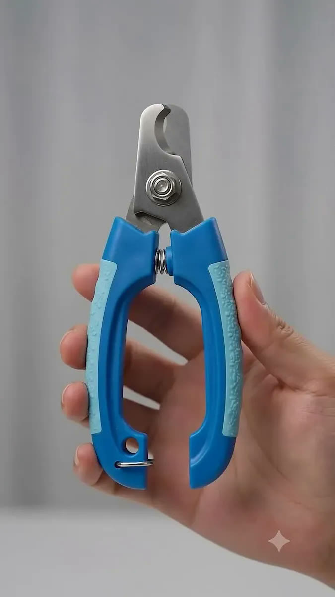
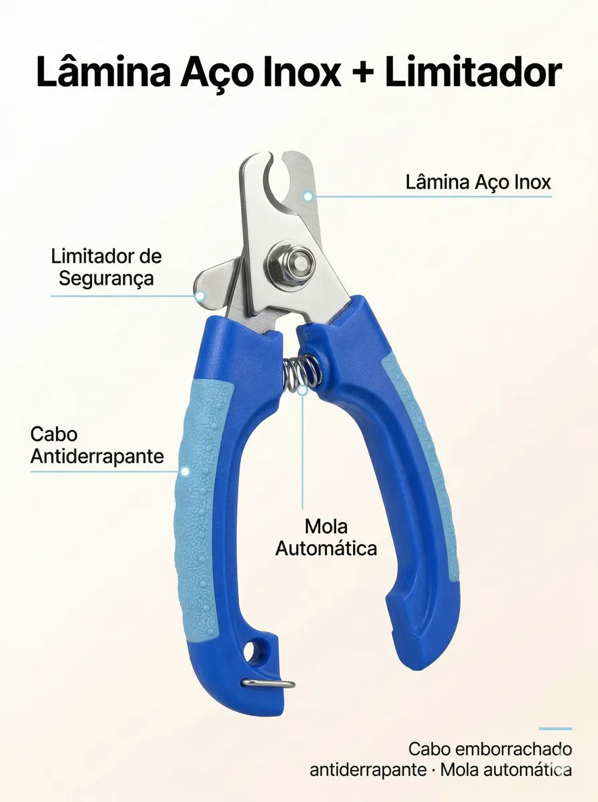
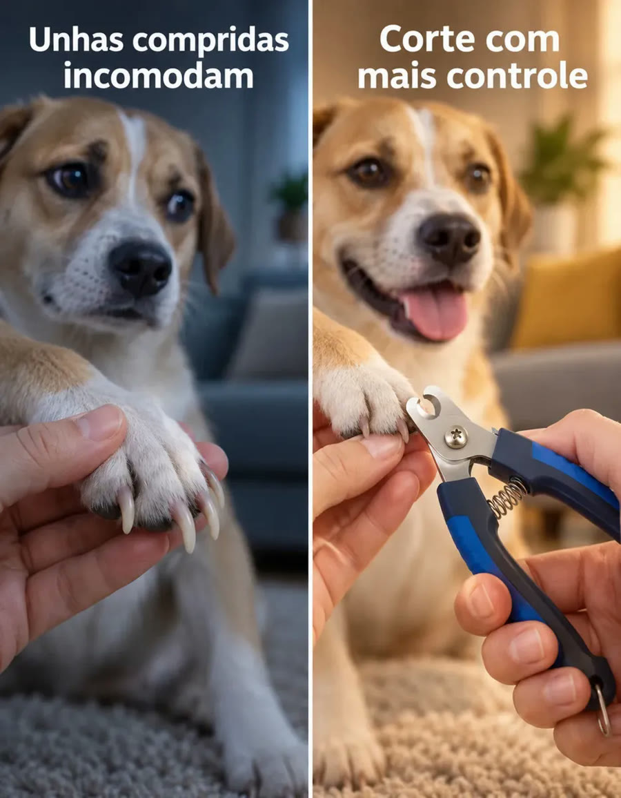
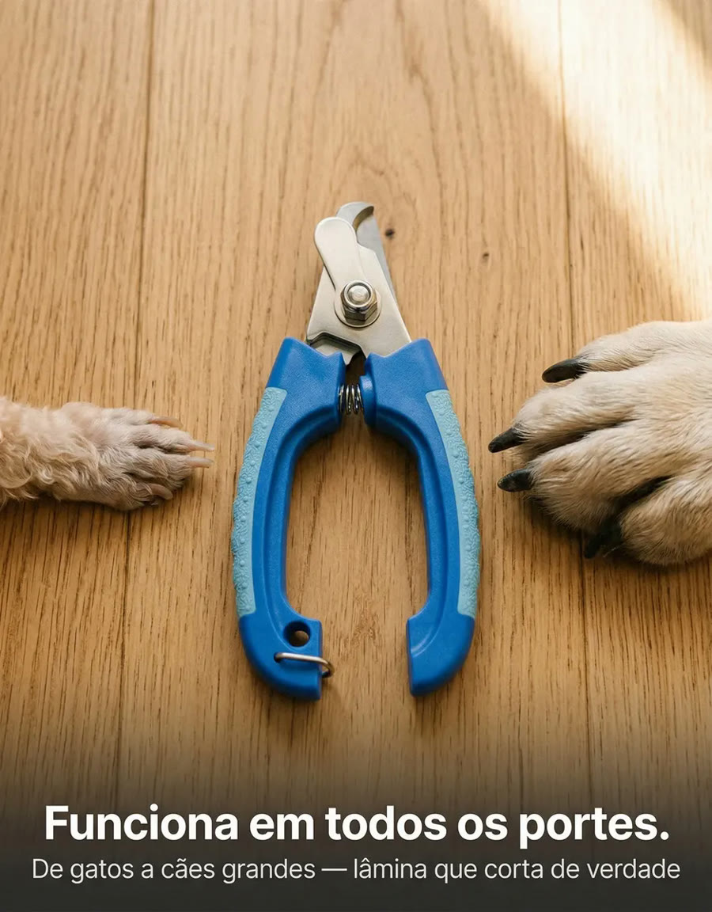
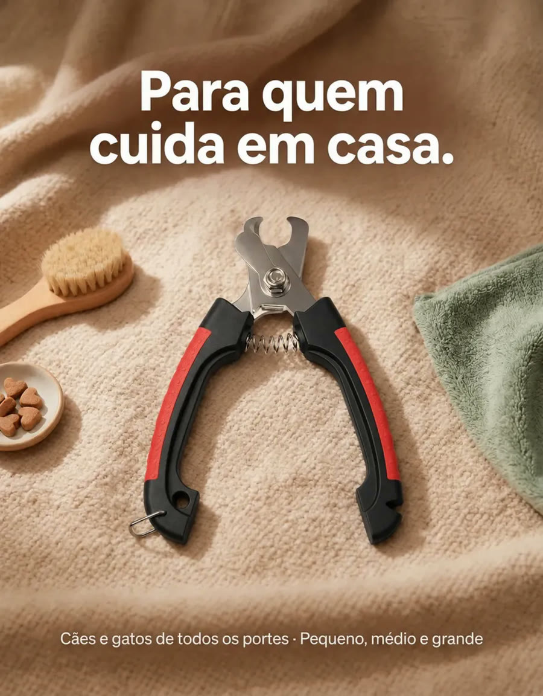
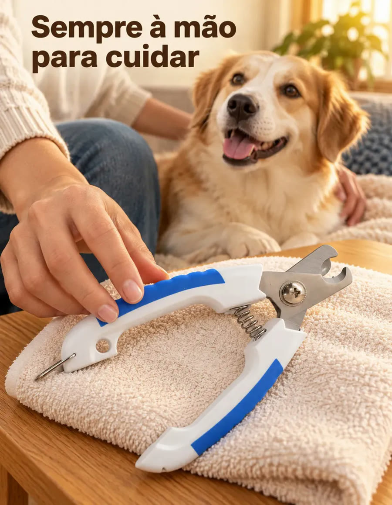

Achado nº 14
Cortador de unha para cães e gatos com limitador de corte






O que diz a página oficial do produto
- É um alicate de cortar unha de pet, com lâmina de aço inox
- Tem um limitador de corte integrado; segundo o anúncio, ele bloqueia o avanço da lâmina para evitar o contato com o nervo da unha
- O cabo é antiderrapante e tem mola; também tem trava de segurança
- Mede 16 cm de comprimento e não é elétrico
- Segundo o anúncio, é para cães de pequeno a grande porte e gatos adultos, e não é indicado para filhotes nem para unhas finas e delicadas
- Segundo o anúncio, a cor enviada depende do estoque
- No Mercado Livre, tem nota 4,9 com mais de 600 avaliações e mais de mil vendidos
Link de afiliado: se você comprar por ele, a Achadaria pode receber uma comissão, sem custo extra para você. Preço, estoque e entrega são da loja e podem mudar; confira lá antes de comprar.